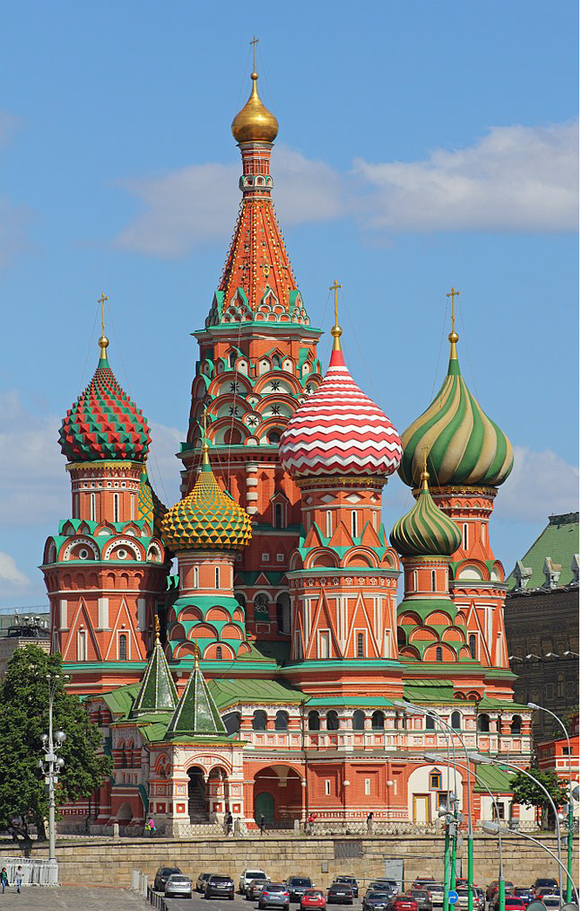
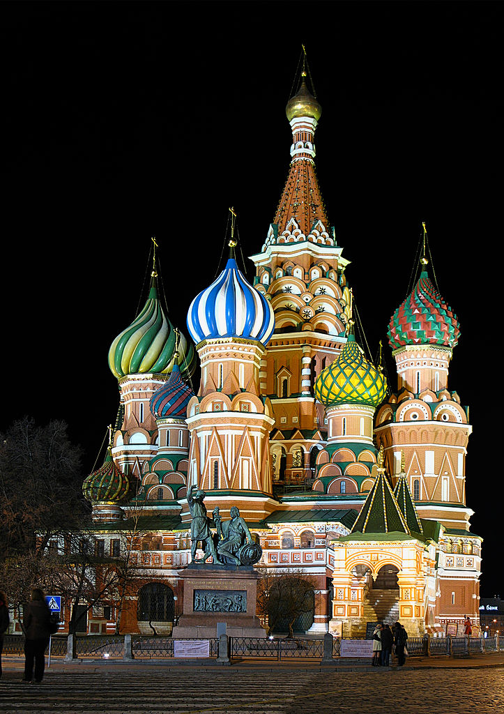
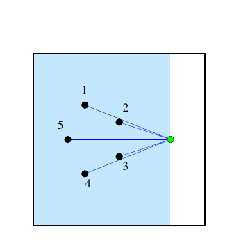

ICPC World Finals 2020 · Problem C
Saint Basil’s Cathedral is the best-known landmark of Moscow and maybe even of all of Russia. Built under Ivan the Terrible in the 16th century, the cathedral is known for its colorful domes. No visit to the city is complete without taking a photo of the former church in Red Square.


The Moscow Tourism Board (MTB) wants to make it as safe as possible for tourists to take the perfect shot of the cathedral. Depending on where you stand when you take a picture, the relative positions of the domes will be different (see Figure C.1). The MTB is concerned that for some desired configurations of domes the region in Red Square where such a photo is possible will be so small as to lead to a dangerous overcrowding of photographers. Wanting to avoid the inevitable pushing, shoving, injury, and Covid that this could cause, the MTB would like to find the area of the region where a photo is possible for any desired ordering of the domes.
For simplicity, assume that cameras have a 180-degree viewing angle. As an illustration consider Figure C.2, which shows the location of the domes (labeled 1–5) and the photographer (green dot) in the plane. If the photographer shoots a picture aiming the camera straight towards the left (directly at dome 5), then everything in the shaded area will be visible in the photograph. Note that in this photograph, the domes will appear in order 4, 3, 5, 2, 1 from the left to the right.

Given the location of the domes within Red Square and a desired left-to- right order of the domes in the photograph, MTB wants to know the area of the region within Red Square from which such a photograph can be taken.
You can assume that the domes are points, so that they do not block each other unless they are in a straight line from the photographer’s view.
The first line of input contains three integers dx, dy, and n, where dx and dy (2 ≤ dx, dy ≤ 105) are the dimensions of Red Square, and n (1 ≤ n ≤ 100) is the number of domes. The bottom-left corner of Red Square is at the origin (0, 0) and the top-right corner is at coordinate (dx, dy).
Each of the next n lines contains two integers xi and yi (0 < xi < dx, 0 < yi < dy), giving the locations (xi, yi) of the domes. The ith line describes dome number i. No two domes are in the same location.
The last line contains a permutation of the numbers {1, …, n} specifying the desired left-to-right viewing order of the domes in the picture.
Output the area of the region within Red Square from which one can take a photo that shows the domes in the requested order. Note that the area may be 0 if there is no position from which to take the requested photo. Your answer should have an absolute or relative error of at most 10−3.
100 100 5 30 70 50 60 50 40 30 30 20 50 4 3 5 2 1
450.000000
100 100 5 30 70 50 60 50 40 30 30 20 50 1 2 5 4 3
0.000000